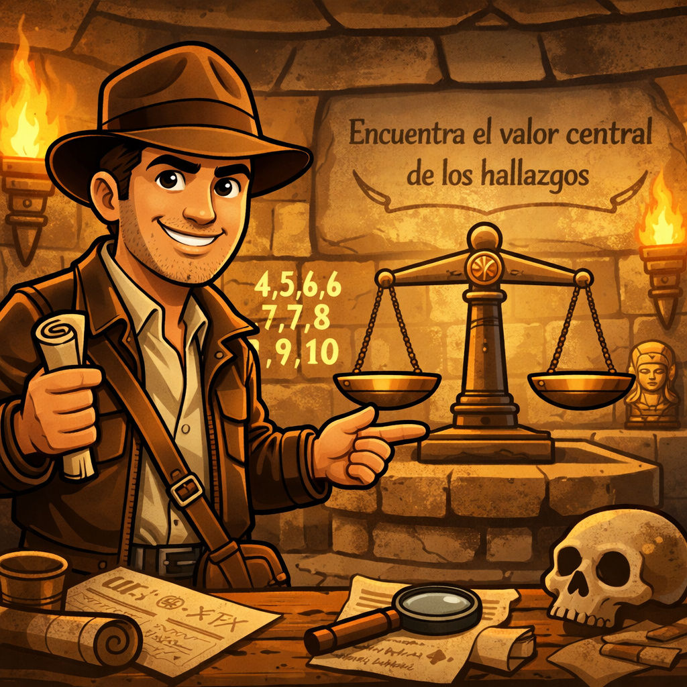
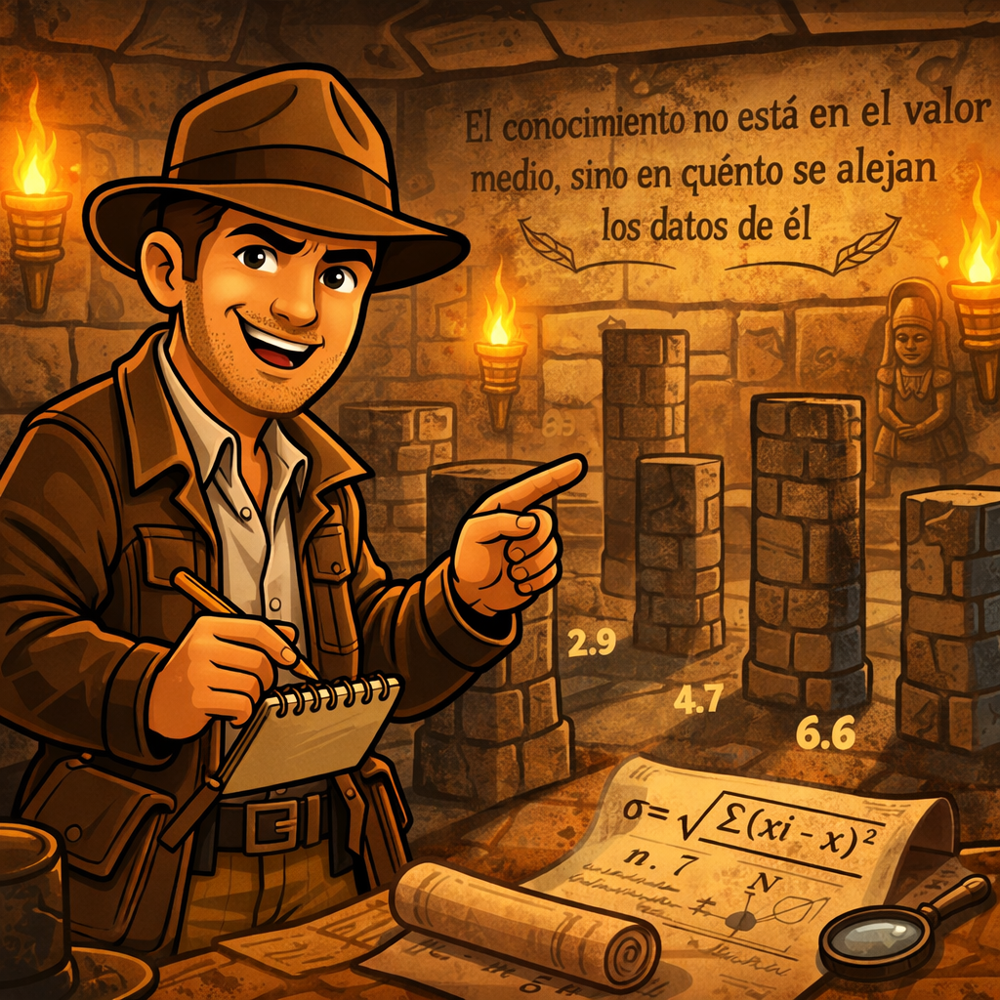
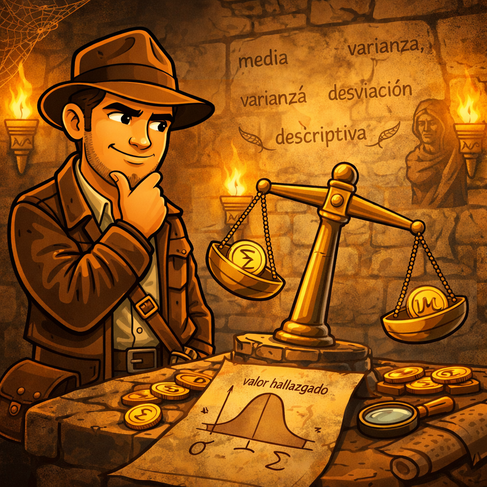
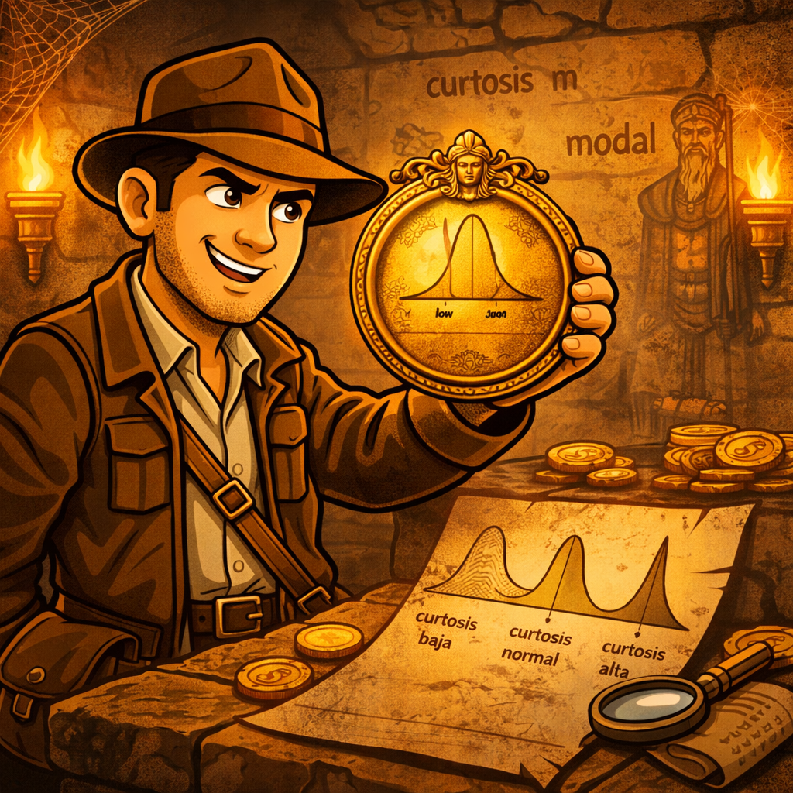
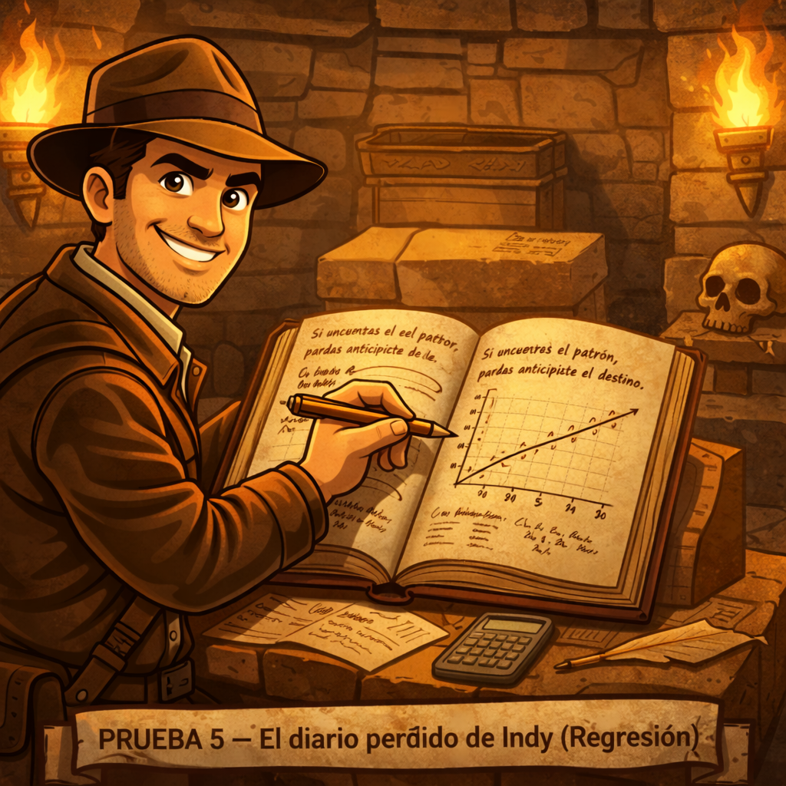
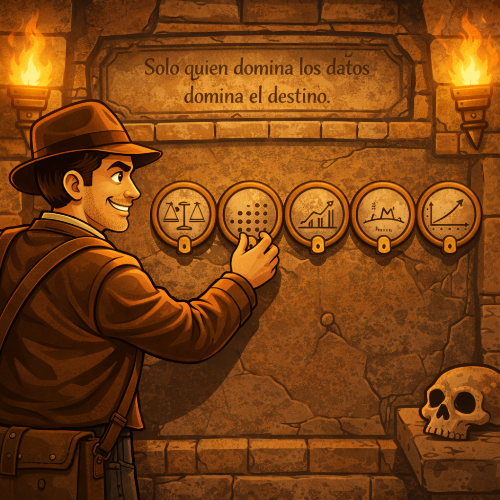
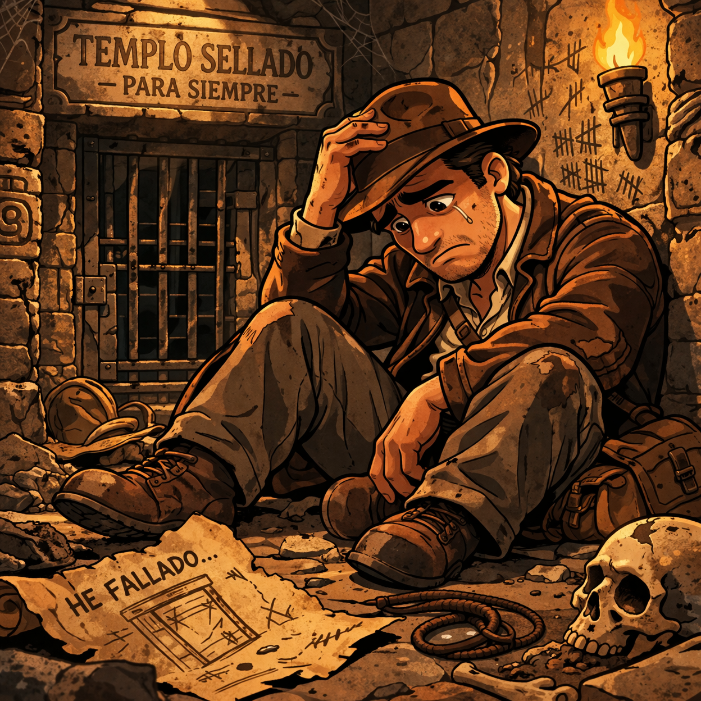

El famoso arqueólogo :contentReference[oaicite:1]{index=1} descubrió un antiguo templo donde una civilización protegía su conocimiento usando **estadística**.
Antes de desaparecer dejó una nota:
“Solo quien interprete correctamente los datos podrá abrir el templo.”
Acceso profesor:
Un mural del templo muestra las reliquias encontradas en expediciones arqueológicas.
Calcula la media aritmética.

Los sacerdotes del templo medían la variabilidad de los hallazgos.
Calcula la desviación típica de los mismos datos.

Los sacerdotes analizaban si la distribución estaba inclinada hacia un lado.
Calcula el coeficiente de asimetría.

El templo clasifica las distribuciones según su forma.
Calcula el coeficiente de curtosis.

En el diario de :contentReference[oaicite:2]{index=2} aparece la relación entre reliquias y valor del tesoro.

Calcula la recta de regresión y estima el valor para x = 11.
Introduce los 5 números obtenidos.

Habéis descifrado el conocimiento estadístico del templo.
El legado de :contentReference[oaicite:3]{index=3} continúa.
El tiempo se ha agotado.
